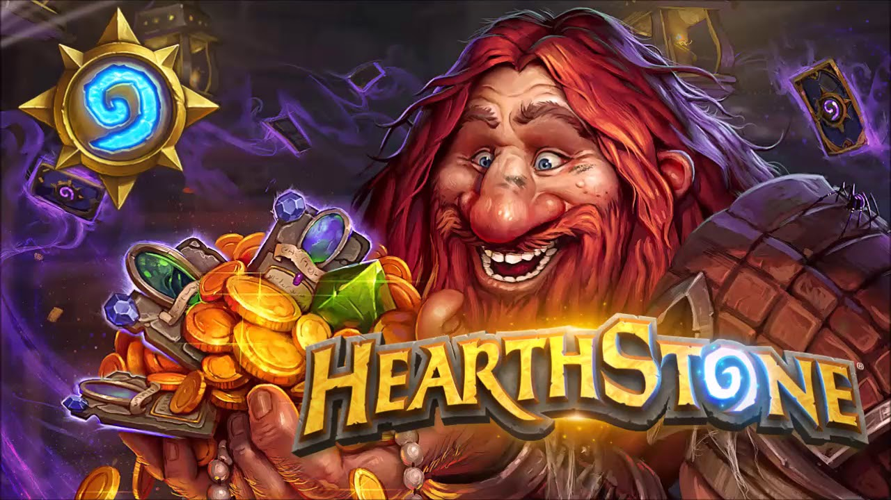
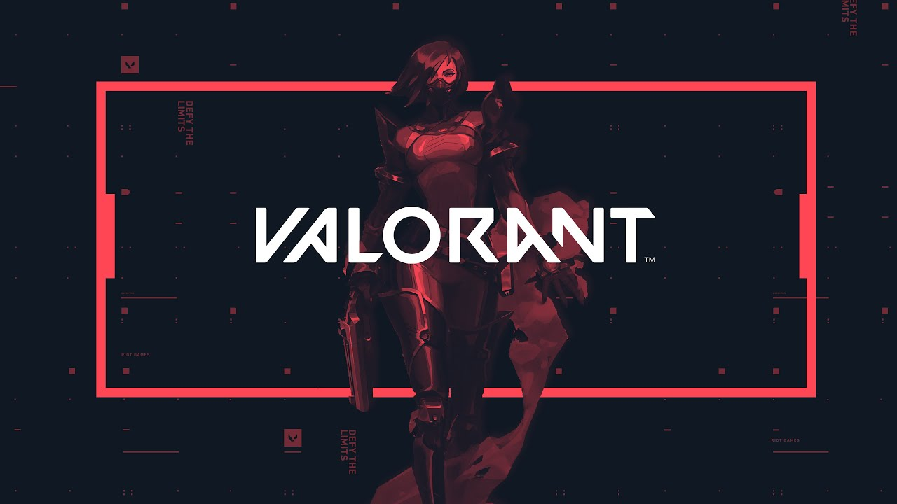

Explore o melhor do mundo dos jogos em uma só plataforma.

The Wicther 3: Wild Hunt
The Witcher III: Wild Hunt é um jogo de RPG de ação desenvolvido pela CD Projekt RED. O jogo segue o caçador de monstros Geralt de Rivia em sua jornada para encontrar a filha desaparecida de Imperatriz Emhyr var Emreis, Ciri, enquanto ele é perseguido pelos Cavaleiros Brancos, uma organização sombria que busca o poder da Criatura.
Saiba mais

Hearthstone
Hearthstone é um jogo de cartas colecionáveis online desenvolvido pela Blizzard Entertainment. O jogo é jogado em turnos, com cada jogador construindo um deck de cartas com personagens, feitiços, armas e habilidades únicas. O objetivo é derrotar o oponente, reduzindo seus pontos de vida a zero.
Saiba mais

Valorant
Valorant é um jogo de tiro em primeira pessoa desenvolvido pela Riot Games. É um jogo de equipe baseado em táticas que coloca dois times de cinco jogadores uns contra os outros em rodadas curtas, com cada jogador escolhendo uma "agente" com habilidades únicas para jogar.
Saiba mais